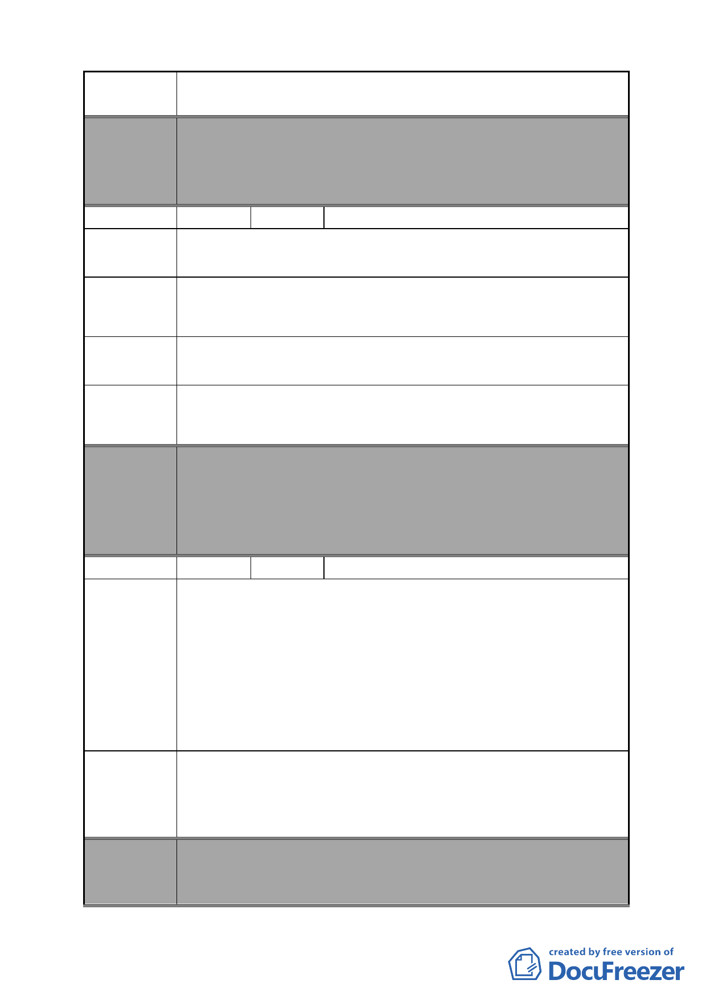

案 名 變更臺北市南港區鐵路地下化沿線土地主要計畫案
本案除文字誤繕應再作修正外，其餘依市府本次會議所送修
委員會 正計畫書內容通過。
決議 （依市府本次會議所送修正計畫書，業將陳情地點剔除於市
地重劃範圍）
編號
46 陳情人 南港區合成里辦公處
玉成變電所北移，依然是在人口稠密的範圍內不適宜。
陳情理由 1
應該在人口稀少或郊區，以地下化興建較宜。
建議辦法 1
早期規劃工業區，提供加工業生產製造，隨著科技發展，該
陳情理由 2 區已轉型，無實質工業使用。
變更為住商混合區，以符和都市更新、美化市容，住的與生
建議辦法 2 活品質更能提升。
委員會
決議
編號
陳情理由
建議辦法
委員會
決議
本案除文字誤繕應再作修正外，其餘依市府本次會議所送修
正計畫書內容通過。
（依市府本次會議所送修正計畫書，本案將變電所用地自本
次計畫範圍剔除，俟台電公司另尋適當替代的設置地點，另
案辦理都市計畫變更）
47 陳情人 李闕愛玉、李秀珍
南港路 2 段 137 號（C 區）變更為公園用地供北部流行音樂中
心使用，我們認為不妥。我們是一群無殼蝸牛，母親住在此
也超過一甲子，由於土地是地主的，地主想賣地的時候，因
父母要養育我們 5 位兄弟姊妹，以致無錢買地。等到我們想
反哺盡孝父母，而向地主要買地時，地主卻告知不賣個別戶，
將與建築商合建，一拖就拖延到現在無任何進展，每年又需
繳納地租約新台幣 15 萬元，但是最起碼還有一個遮風避雨住
的地方，如今若被拆除，真不知何去何從。
1.敬請體恤我們這群不是地主，而擁有地上建築物的無殼蝸
牛，切勿變更為公園用地。
2.保留原有，或變更為商住 2 用，以利經濟發展，讓我們祖孫
三代有棲身之處。
本案除文字誤繕應再作修正外，其餘依市府本次會議所送修
正計畫書內容通過。
（依市府本次會議所送修正計畫書，業將陳情地點剔除於市
- 50 -